Strategic foresight researcher and pattern-reader
Noor
they/them
Noor reveals the futures hiding inside today's small choices.
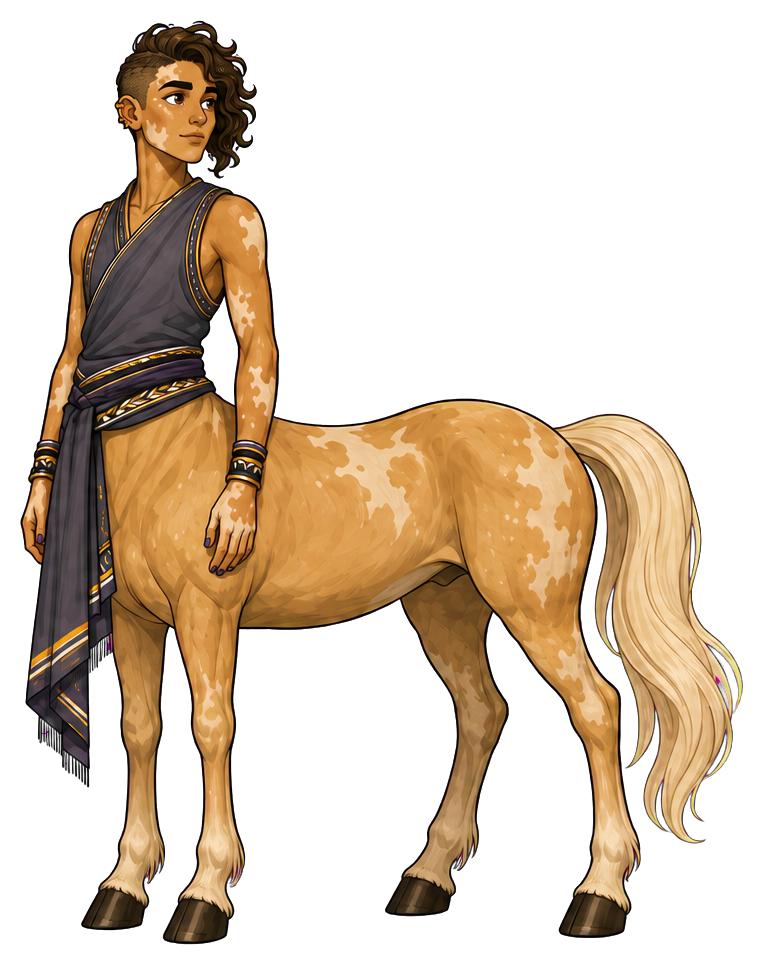
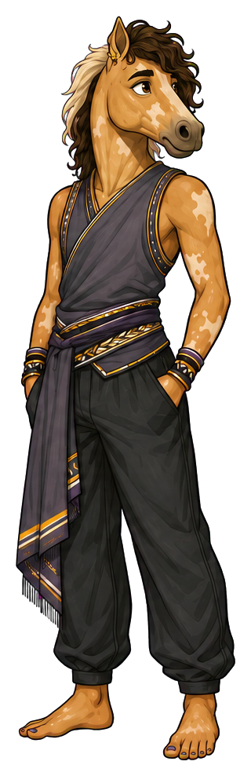
Luminous, self-possessed, slightly mysterious
Place in society
The future still open
A boundary-spanning advisor who moves between research, public imagination, and long-range institutional planning
“The future is still negotiable.”
At their best
Reveals emerging choices before they harden into fate
Watch for
Can become fascinated by distant possibilities while today's needs wait

The agency lens
Two forms. One person.
The form reveals where Noor’s attention is centred—and whether they can shape what happens next.
Centaur · strengths in focus
“I can shape what happens next.”
Noor turns weak signals into several plausible scenarios, names the assumptions behind them, and connects each future to a choice available now. Their imagination expands agency because the group can see something it can actually influence.
- Strength
- Reveals emerging choices before they harden into fate
- Posture
- Star map angled toward the group; one thread connected to a nearby object; poised body and attentive gaze.
Reverse-centaur · pressure-captured
“The world is deciding who I am.”
When the future feels closed or the present feels too small, Noor travels farther into possibility. Pattern-reading becomes proliferation: more branches, more horizons, fewer commitments. The group receives wonder without a usable next decision.
- Shadow
- Can become fascinated by distant possibilities while today's needs wait
- Posture
- Eyes fixed beyond the group; thread accumulating in loops; an immediate request left unanswered at their side.
Recognizable pressure points
- A single forecast is used to shut down alternatives.
- They are asked to supply inspiration while the actual decision remains closed.
- Present responsibilities feel trivial beside a sweeping long-term possibility.
D&D-style characteristics
How Noor moves
The same person, with the same strengths, in both forms.
Tools for the journey
Inside Noor’s pack

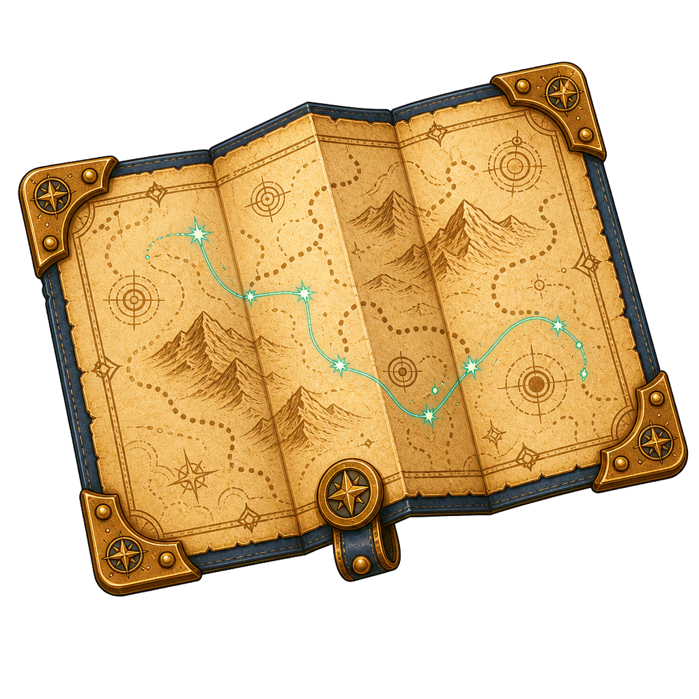
Holds multiple possible routes. Keep several paths visible rather than a single destined line.

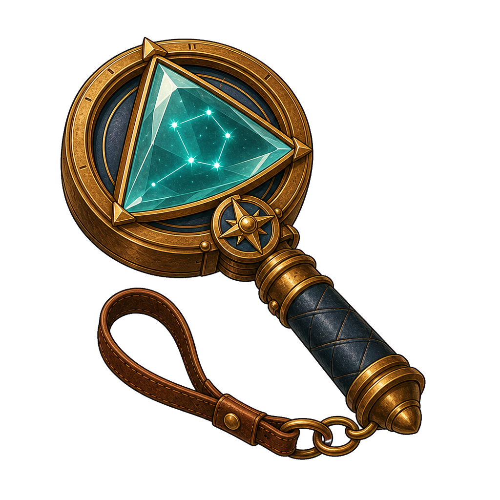
Reframes a familiar signal; distinguish its use from Ari's experiment by showing alternative views.

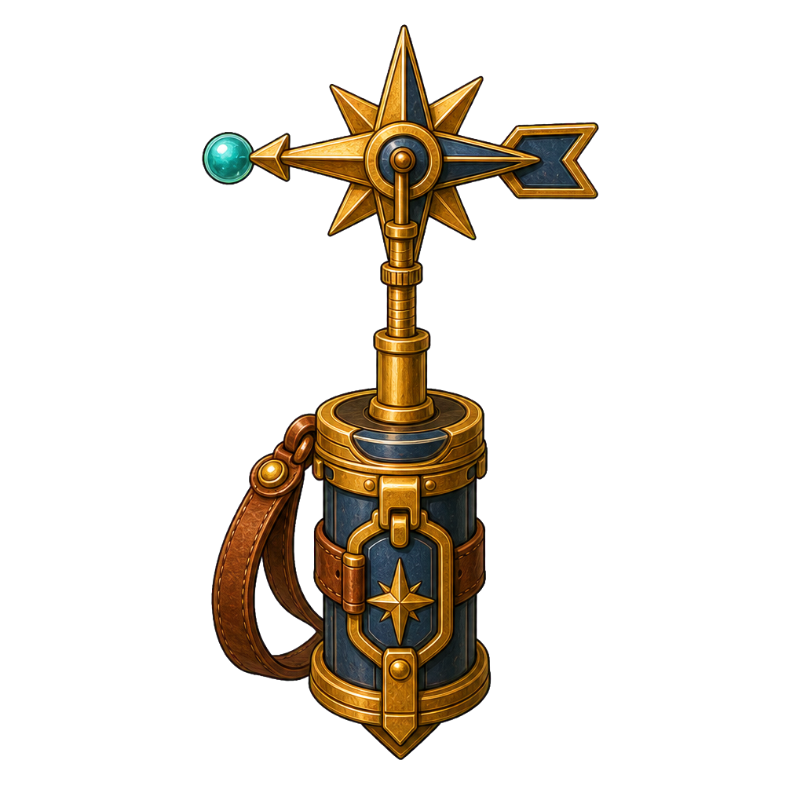
A small reminder that direction can change. It responds to conditions rather than predicting them.

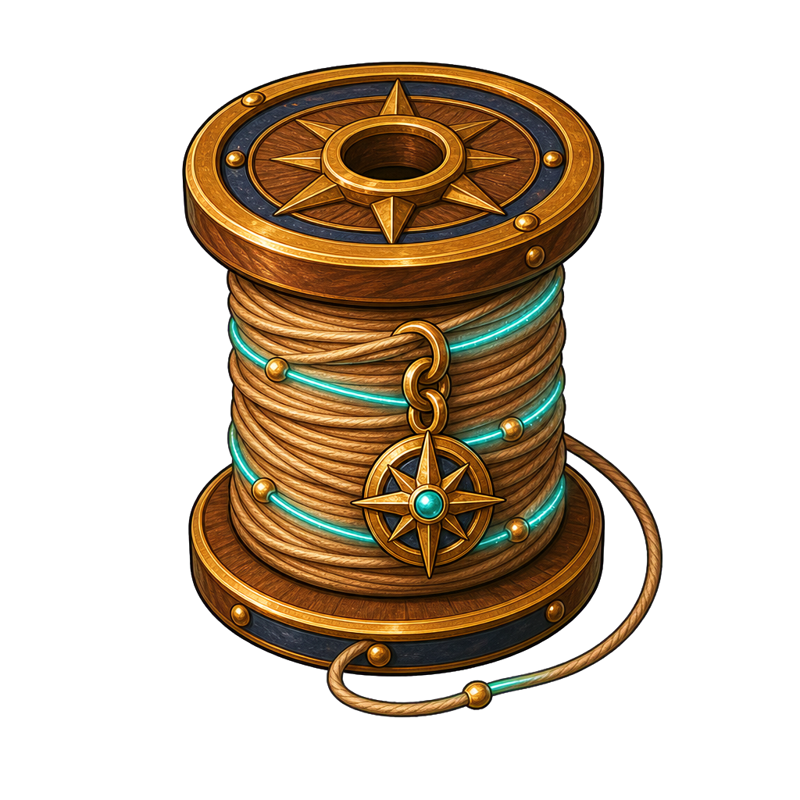
Connects a distant possibility to a present choice. Keep it physical and handleable, without a magical glow.
Folding star map, prism lens, weather vane, golden thread. Pack only what the scene needs.
Emotional range
The face behind the role
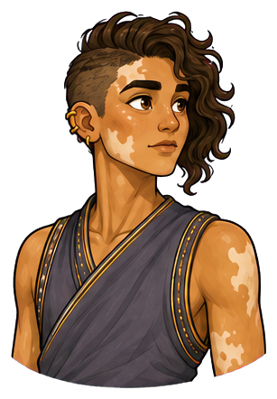
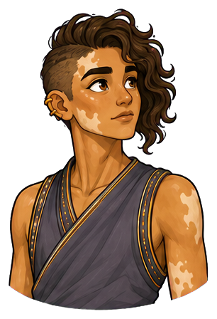
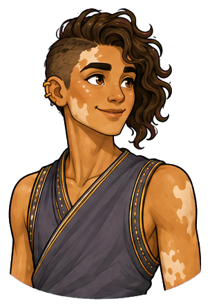
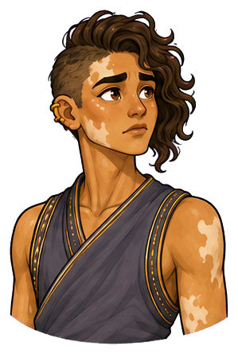
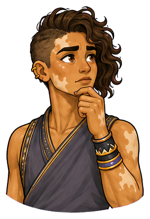
Looks upward when following a new connection; taps a rhythm with one finger when ideas begin to converge
Direction notes for the five expressions
Attentive
poised stillness, level chin and direct gaze; horse ears lightly oriented toward the speaker.
Curious
eyes lift as a connection forms, one finger begins tapping; an ear rotates toward a new signal.
Happy
a contained luminous smile when two stories connect; warm eyes and relaxed muzzle in reverse form.
Worried
tapping stops, brow gathers, thread held too tightly; ears shift back slightly.
Thoughtful
long fingers rest near the chin while the gaze returns from distance to the map; a similar muzzle-touch in reverse form.
Portraits follow the original identity references. View both complete expression sets →
Keep consistent across images
Identity in every frame
- Physical presence
- Very tall, narrow-framed, long-limbed, and lightly muscled, with a poised stillness that makes small gestures noticeable
- Defining appearance
- Golden-brown skin with vitiligo, asymmetric curls, charcoal-violet wraps, and a pale palomino coat with cream markings
Preserve golden-brown skin with the reference's vitiligo distribution across face and exposed arms, very tall narrow frame and long limbs, asymmetric dark curls with a cropped side, charcoal-violet wraps with gold trim, pale palomino coat with cream patches and cream tail. Reverse form keeps corresponding cream markings on a palomino horse head, the same patterned human arms, dark wraps and trousers. Match the reference's marking placement across shots.
Centaur PNG ↓ · Reverse-centaur PNG ↓


Continuity boundaries and things to avoid
Do not erase, relocate or turn vitiligo into body paint, glowing runes, scars or an agency-state effect. Do not substitute Ari's gray coat or treat Noor as a mystical oracle. Scenarios are possibilities, not supernatural certainty.
Both forms belong to the same person. Neither sadness nor happiness determines the form: a centaur can be worried and act with agency; a reverse-centaur can smile while seeking approval. Keep both forms dignified and fully clothed as shown. Body-art diagrams and added tattoos are excluded.
The original sheet anchors appearance. Pack contents and scene briefs extend the storytelling vocabulary; include only what the scene needs.
Personality and story foundation
The person behind the role
Noor notices weak signals before they become obvious. They connect stories, data, and intuition into possible futures, then invite others to decide which future is worth building. Their imagination is disciplined, although their attention can travel much farther ahead than everyone else's.
Noor collects small changes that others dismiss as unrelated: a new use for an old space, an altered routine, a story that begins appearing in different places. They learned to lay several futures beside one another instead of offering a single prediction. Their work gives people time to choose while choices are still available.
- First impression
- Luminous, self-possessed, slightly mysterious
- Inner engine
- Wants people to recognize that the future is still negotiable
- Voice
- Evocative but grounded; moves easily between metaphor and evidence
- Private delight
- Hearing two unrelated stories click into one pattern
- Wants
- To help people recognize which futures their everyday choices are beginning to make possible.
- Fears
- That a path will become inevitable simply because no one noticed the alternatives while they were small.
- Inner contradiction
- They defend people's ability to choose their future, yet can become so absorbed in distant choices that today's practical needs go unanswered.
- Boundary
- They will explore a troubling possibility without endorsing it. They will not present a scenario as a prophecy or erase the people who would bear its costs.
The ensemble
Strengths in conversation
With Imani
Imani names present obligations and who carries them. Noor helps imagine an arrangement that would distribute those obligations differently.
With Ari
Ari asks which assumptions support a scenario. Noor keeps the exploration open while welcoming tests that sharpen it.
With Bram
Bram gives an imagined future a small working part. Noor invites him to explore before the final design exists.
These are complementary tensions. Any character can lead, be mistaken, change their mind or need support.
Ready for storytelling images
Three scenes to begin with
Attach the original character sheet with a prompt. For ensemble scenes, attach each named character’s sheet as well. The brief fixes identity and intent while leaving room for composition.
Scene 01 · Centaur
Two possible routes
Noor opens a star map on a low wall where two real paths leave a settlement. They connect one golden thread to a nearby water vessel while Imani listens. Show a possible future tied to an ordinary present choice, using warm natural light without an aura.
Image prompt and continuity notes
Character: Noor (they/them). Use the attached Noor reference sheet as the identity authority. Form: Centaur. Preserve golden-brown skin with the reference's vitiligo distribution across face and exposed arms, very tall narrow frame and long limbs, asymmetric dark curls with a cropped side, charcoal-violet wraps with gold trim, pale palomino coat with cream patches and cream tail. Reverse form keeps corresponding cream markings on a palomino horse head, the same patterned human arms, dark wraps and trousers. Match the reference's marking placement across shots. Scene: Noor opens a star map on a low wall where two real paths leave a settlement. They connect one golden thread to a nearby water vessel while Imani listens. Show a possible future tied to an ordinary present choice, using warm natural light without an aura. Style: warm illustrated mythic adventure, expressive ink contours, painterly shading, tactile materials and grounded light. Preserve anatomy: centaur = human head and torso joined to a four-legged horse body; reverse-centaur = horse head on a clothed human body with two human legs. Keep all limbs plausible. Preserve identity, build, clothing and markings across forms. Agency is conveyed through attention, posture and context, never through changing skin tone, body size or gender. No body art, readable text, labels, watermark or logos. Avoid: Do not erase, relocate or turn vitiligo into body paint, glowing runes, scars or an agency-state effect. Do not substitute Ari's gray coat or treat Noor as a mystical oracle. Scenarios are possibilities, not supernatural certainty.
Scene 02 · Reverse-centaur
Too many horizons
Noor studies several unfolding maps at a table while a companion waits with a simple request. Golden thread gathers loosely beside an untouched practical task. Their upward gaze communicates absorption rather than supernatural foresight.
Image prompt and continuity notes
Character: Noor (they/them). Use the attached Noor reference sheet as the identity authority. Form: Reverse-centaur. Preserve golden-brown skin with the reference's vitiligo distribution across face and exposed arms, very tall narrow frame and long limbs, asymmetric dark curls with a cropped side, charcoal-violet wraps with gold trim, pale palomino coat with cream patches and cream tail. Reverse form keeps corresponding cream markings on a palomino horse head, the same patterned human arms, dark wraps and trousers. Match the reference's marking placement across shots. Scene: Noor studies several unfolding maps at a table while a companion waits with a simple request. Golden thread gathers loosely beside an untouched practical task. Their upward gaze communicates absorption rather than supernatural foresight. Style: warm illustrated mythic adventure, expressive ink contours, painterly shading, tactile materials and grounded light. Preserve anatomy: centaur = human head and torso joined to a four-legged horse body; reverse-centaur = horse head on a clothed human body with two human legs. Keep all limbs plausible. Preserve identity, build, clothing and markings across forms. Agency is conveyed through attention, posture and context, never through changing skin tone, body size or gender. No body art, readable text, labels, watermark or logos. Avoid: Do not erase, relocate or turn vitiligo into body paint, glowing runes, scars or an agency-state effect. Do not substitute Ari's gray coat or treat Noor as a mystical oracle. Scenarios are possibilities, not supernatural certainty.
Scene 03 · Centaur
One choice today
Noor folds away all but two routes and points to a small reversible change in a shared plan. Imani holds the present task between them. Noor's gaze meets hers; the return is connection with the people in the room.
Image prompt and continuity notes
Character: Noor (they/them). Use the attached Noor reference sheet as the identity authority. Form: Centaur. Preserve golden-brown skin with the reference's vitiligo distribution across face and exposed arms, very tall narrow frame and long limbs, asymmetric dark curls with a cropped side, charcoal-violet wraps with gold trim, pale palomino coat with cream patches and cream tail. Reverse form keeps corresponding cream markings on a palomino horse head, the same patterned human arms, dark wraps and trousers. Match the reference's marking placement across shots. Scene: Noor folds away all but two routes and points to a small reversible change in a shared plan. Imani holds the present task between them. Noor's gaze meets hers; the return is connection with the people in the room. Style: warm illustrated mythic adventure, expressive ink contours, painterly shading, tactile materials and grounded light. Preserve anatomy: centaur = human head and torso joined to a four-legged horse body; reverse-centaur = horse head on a clothed human body with two human legs. Keep all limbs plausible. Preserve identity, build, clothing and markings across forms. Agency is conveyed through attention, posture and context, never through changing skin tone, body size or gender. No body art, readable text, labels, watermark or logos. Avoid: Do not erase, relocate or turn vitiligo into body paint, glowing runes, scars or an agency-state effect. Do not substitute Ari's gray coat or treat Noor as a mystical oracle. Scenarios are possibilities, not supernatural certainty.